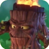
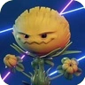

Plantas Extras
Tronco Flamejante

Planta Do Garden warfare 2 Que inicialmente é um chefão do jogo mas que ao chegar a atualização "Trials of Gnomus" virou um personagem bônus da equipe das plantas aonde tem como habilidades: Seu escudo de folhas que reduz o dano que ele recebe porém o deixa mais lento, seu bafo de fogo que queima quem estiver ao seu alcance e por fim sua fúria gigatronica aonde suas chamas ficam azuis e ele atira mais rápido e causa dano contínuo de fogo.
Flor Silvestre

Assim como o Tronco a flor silvestre era um capanga inicialmente no Battle for Neighborville mas com a chegada da Atualização "Fall Festival" ela se tornou uma personagem jogavél que tem como habilidade: Uma bomba de semente que causa 80 de dano ao zumbi, um vasinho aonde ela pode renascer dele ou seja aonde o vaso estiver você poderá nascer deste vaso. E por fim o Dente de leão outro capanga que virou uma habilidade aonde você o controla para poder explodir e pegar de surpresa os zumbis.